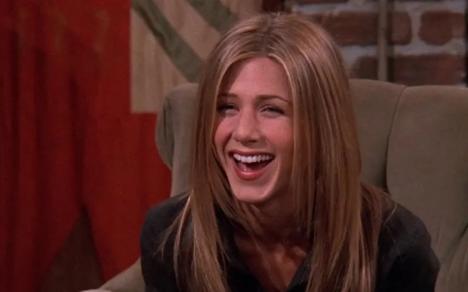
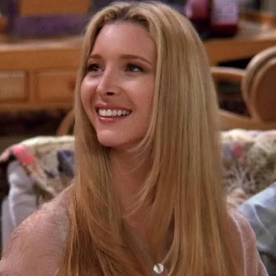
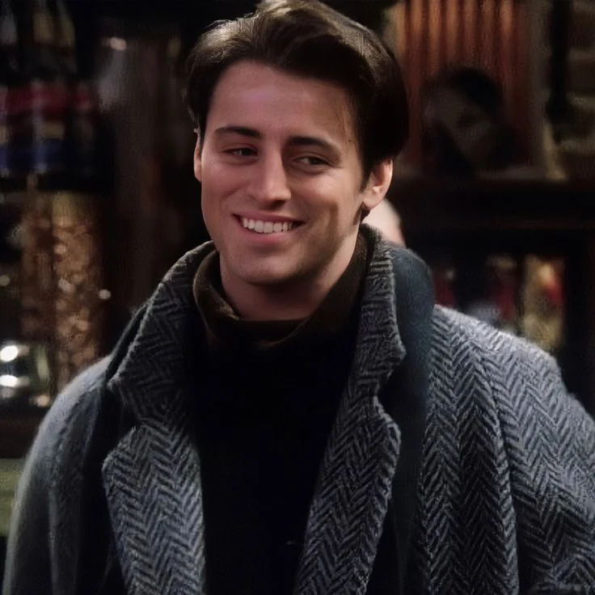
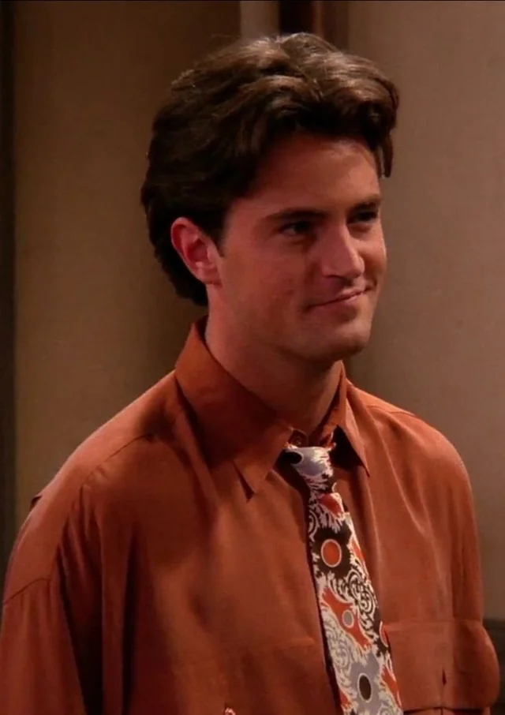

Overview
Characters/Cast
Fun Facts!
Characters/Cast
The Core Six
- Rachel Green (Jennifer Aniston): Starts the series as a "spoiled" runaway bride who is financially dependent on her father. Her 10-season journey is defined by her professional growth from a waitress at Central Perk to a high-level executive at Ralph Lauren. Her "will-they-won't-they" romance with Ross Geller is a central narrative pillar.
- Monica Geller (Courteney Cox): The "mother hen" of the group, known for her competitive nature and obsessive-compulsive cleaning habits. Formerly overweight as a teenager, she becomes a professional chef. Her most significant arc involves her transition from a woman desperate for marriage and children to finding stable, deep love with her friend Chandler Bing.
- Phoebe Buffay (Lisa Kudrow): A quirky, eccentric masseuse and self-taught musician known for songs like "Smelly Cat." Phoebe endured a difficult childhood (homelessness, mother's suicide) that contributes to her unique, unconventional worldview. She serves as a surrogate for her brother and marries Mike Hannigan in the final season.
- Joey Tribbiani (Matt LeBlanc): A struggling actor who finds fame as Dr. Drake Ramoray on the soap opera Days of Our Lives. Joey is a loyal, simple-minded, and charming person who is protective of his food and friends. He is famous for the pickup line "How you doin'?"
- Chandler Bing (Matthew Perry): An executive specializing in statistical analysis (later an advertising copywriter) who uses sarcasm as a defense mechanism. Known for his commitment issues and quick wit, he eventually finds stability in his relationship with Monica Geller.
- Ross Geller (David Schwimmer): Monica's older brother and a paleontologist. Ross is a "hopeless romantic" who has had a crush on Rachel since high school. He is famous for his three failed marriages, including a drunken Vegas wedding to Rachel, and his adamant claim that he and Rachel were "on a break".

Rachel Green
.jpg)
Monica Geller

Phoebe Buffay

Joey Tribbiani

Chandler Bing
Notable Recurring Characters
- Janice Hosenstein (Maggie Wheeler): Chandler's incredibly annoying, nasal-voiced ex-girlfriend who appears in every season.
- Gunther (James Michael Tyler): The manager of Central Perk who holds a long-standing unspoken love for Rachel.
- Mike Hannigan (Paul Rudd): Phoebe's husband, who she meets in seasons 9 and 10.
- Richard Burke (Tom Selleck): Monica's older boyfriend and a long-time family friend of the Gellers.
- Jack and Judy Geller (Elliott Gould & Christina Pickles): Ross and Monica's parents, who often openly favor Ross.
- Carol Willick (Anita Barone/Jane Sibbett): Ross's ex-wife who shares custody of their son, Ben.